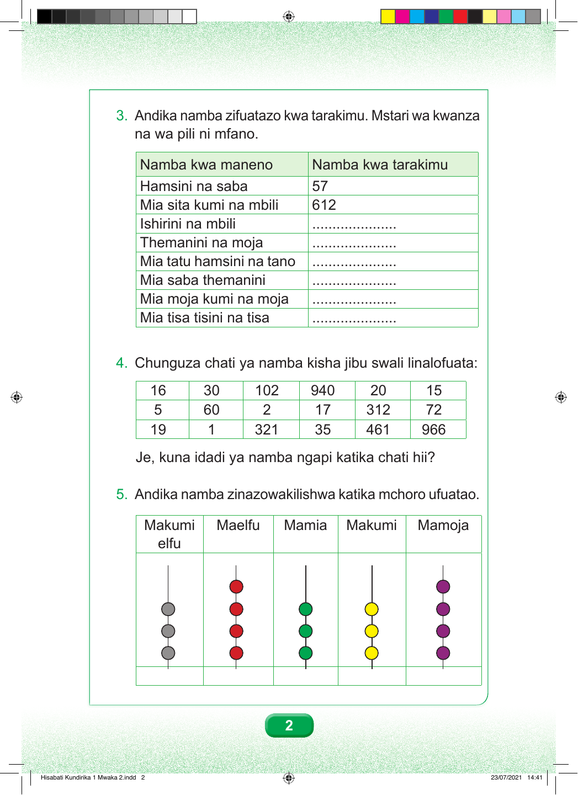

Swali la 3. Andika namba zifuatazo kwa tarakimu. Mstari wa kwanza na wa pili ni mfano. Jedwali lina safu mbili: namba kwa maneno, na namba kwa tarakimu. Mstari wa kwanza ni mfano. Namba kwa maneno ni hamsini na saba. Kwa tarakimu ni 57. Mstari wa pili ni mfano. Namba kwa maneno ni mia sita kumi na mbili. Kwa tarakimu ni 612. Mstari wa tatu. Ishirini na mbili itaandikwaje kwa tarakimu? Mstari wa nne. Themanini na moja itaandikwaje kwa tarakimu? Mstari wa tano. Mia tatu hamsini na tano itaandikwaje kwa tarakimu? Mstari wa sita. Mia saba themanini itaandikwaje kwa tarakimu? Mstari wa saba. Mia moja kumi na moja itaandikwaje kwa tarakimu? Mstari wa nane. Mia tisa tisini na tisa itaandikwaje kwa tarakimu? Swali la 4. Chunguza chati ya namba, kisha jibu swali linalofuata. Mstari wa kwanza una namba: 16, 30, 102, 940, 20 na 15. Mstari wa pili una namba: 5, 60, 2, 17, 312 na 72. Mstari wa tatu una namba: 19, 1, 321, 35, 461 na 966. Je, kuna idadi ya namba ngapi katika chati hii? 5. Andika namba zinazowakilishwa katika mchoro ufuatao. Mamoja. Makumi. Mamia. Maelfu. Makumi elfu. Mchoro una mafungu manne ya mamoja, mafungu matatu ya makumi, mafungu matatu ya mamia, mafungu manne ya maelfu na mafungu matatu ya makumi elfu. Namba hiyo itaandikwaje kwa tarakimu? 2 Hisabati Kundirika 1 Mwaka 2.indd 2 23/07/2021 14:41